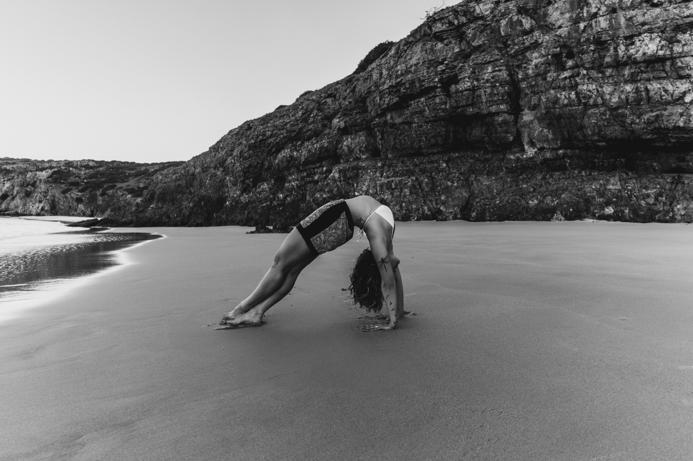

A rooted path
I was born in Brazil and have lived abroad for many years. I left my home moved by the wish to explore and step out of the comfort zone. In the search for meaning I found yoga — a path of healing, transformation and return to what is essential.
I lived six years in New Zealand, where I met my teacher, whose authenticity and presence inspired me deeply. Later, in India, I immersed myself in practices such as Vipassana, Shatkarmas, Cosmic Yoga, Hatha and Vinyasa. With time I understood yoga was not only a personal practice — it was knowledge meant to be shared.
Yoga healed me and keeps reminding me who I am. It is philosophy, medicine and a way of living. Today I dedicate myself to holding simple and sincere spaces for others to rediscover themselves — to ground, soften and rise.
Movement as meditation
A gentle weave of Hatha, Meditation, Kriyas and Yoga Nidra, adapted to the moment.
1×1: personalized sessions for your body and rhythm. Group sessions: gentle community practice, all levels welcome. Retreats: immersive time to slow down and renew. Yoga Nidra is conscious rest — where body and mind soften and the being awakens to its natural clarity.

Log in with your GitHub account to comment. Your message appears here immediately.